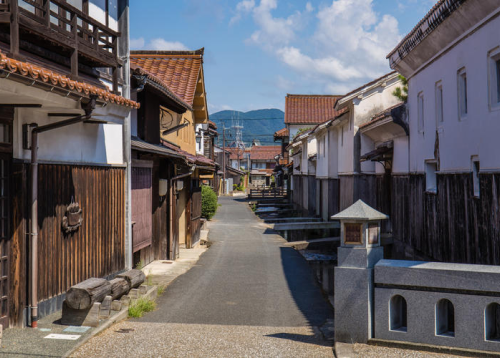

Hometown

Higashiōsaka city is located in the northeastern part of Osaka Prefecture and is the second-largest city in the prefecture after Osaka city.
The city is known for its large population of Korean residents, who have established a vibrant Korean community with numerous Korean restaurants and shops.

A popular local dish is Hōtō. A thick and chewy noodle soup that is made with vegetables in a miso-based broth.
Higashiōsaka is known as the birthplace of Japan's national sport, rugby. The city is home to the Hanazono Rugby Stadium, which is the oldest rugby stadium in Japan and has hosted numerous international rugby matches.